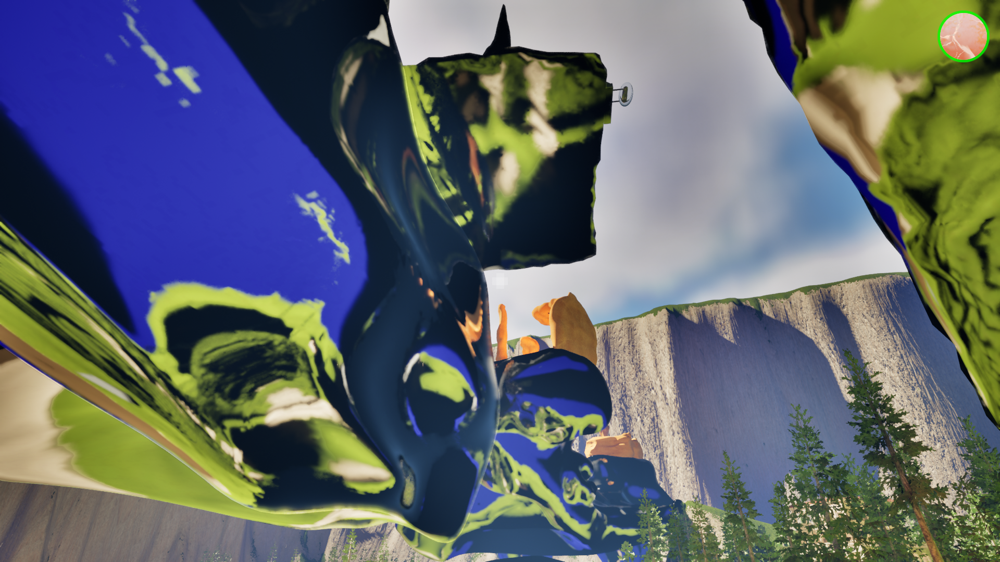
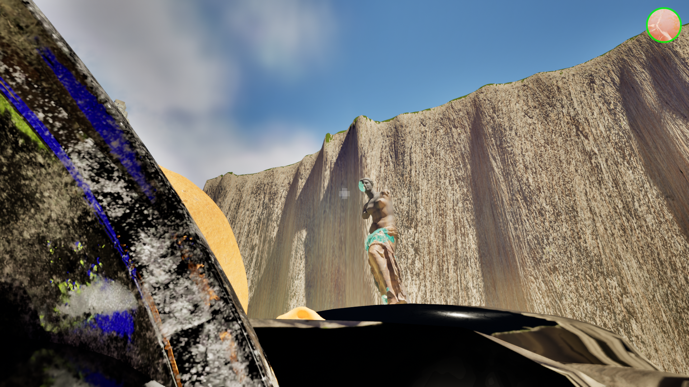
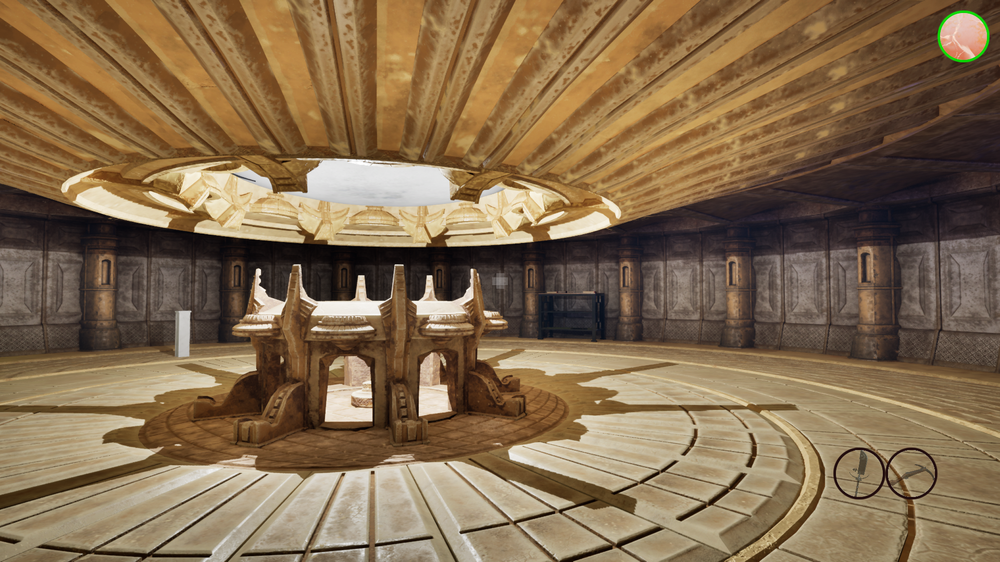
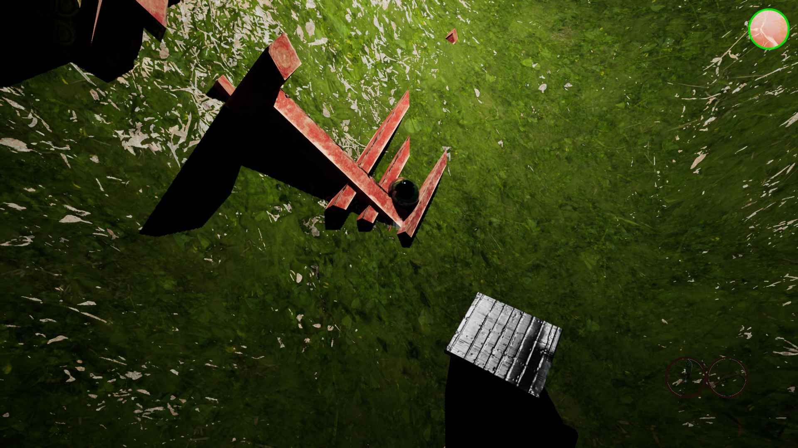
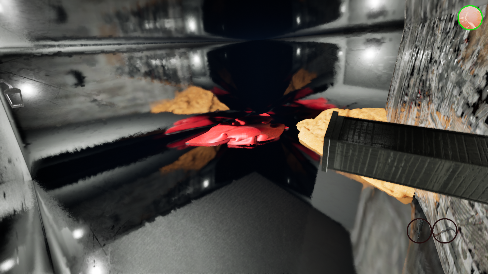
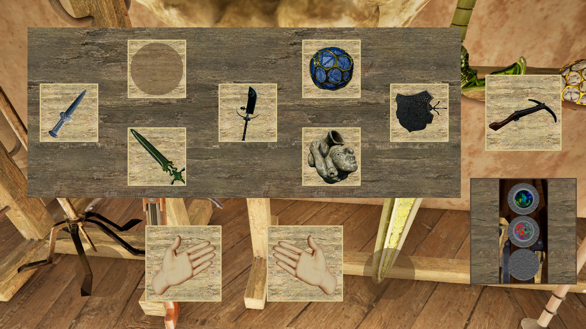

Magus Relics: the Majimono
What is Magus Relics: the Majimono?
Majimono, for brevity's sake, is a first-person game that intertwines 3D puzzle mechanics with a pseudo-open world, filled with story secrets that layer a dynamic narrative at three levels: the world history, the Basin's house history, and the personal development of the main character. This is all accomplished through unravelling the mystery behind the magical artifact they are entrusted with when coming across a man at death's doors, as well as the decoding of the alphabet the many texts in the game are written in.
Project tools
The project was developed using Unreal Engine 5 paired with Visual Studio. Assets-wise, most of the 3D models were taken from Sketchfab, and the music and SFXs were from Pixabay and Freesound, although we would occasionally make our own models and textures too.
Gameplay
In order to provide an experience that focused on creating a "sense of wonder" and "historical awe", several systems were put into place.
1. Exploration & Puzzles
Fundamented purely on the placement of elements across the world, as well as how lines of vision hide and reveal certain information, content is distributed around the map in a way that both pulls players towards certain directions, and makes it likely they organically encounter key content while doing so.



On the other hand, then, are many secrets that are purposefully placed in inconspicuous locations, to reward players that use the game's mechanics creatively, filled with non-mandatory but texture-enriching content.



Whether mandatory or not, the design of puzzles tends to focus on testing the player's knowledge about the tools they have available, and the world they inhabit. Interacting with them is mostly limited to a) grabbing / releasing items; b) applying runic effects to objects; c) using expanded player movement options; or d) environmental interactions.
2. The Majimono & the Runes
This being the main vector of gameplay progression for the early-mid game, it has two focuses: the obtention of runes, scattered across the map in particular locations; and figuring out the different functionalities of the Majimono, and how different arrangements of runes within it can generate different effects.


3. Runic Weapons
The weapons are the second vector of gameplay progression, which are revealed in more depth during the mid-late section of the game. While they work similarly to runes in term of what they provide for exploration (though in different ways), they add a layer of decision-making, since taking a weapon means forsaking the rune it is tied to until the player returns home.

Additionally, they themselves help expand both the Majimono's inner workings, and the lore of the game.

4. Transcriptions & Day - Night Cycles
The dynamics emerging between the exploration and the alphabet's transcription were the core of the game, and at the same time, it was identified early on as one of its main points of friction. Because players will naturally prefer to go out and explore, rather than figuring an alphabet they are given barely no understanding of, the early game is characterized by a cap on how much content they can unlock, which sooner or later will force them to engage with the transcription system. This is further reinforced by the day and night cycle, the later of which comes coated by a heavy darkness, driving the player back home, wherein they are limited to transcribe, and little more.
This first contact is toned down on purpose, to scaffold the player's learning, and very quickly provides valuable information that opens up new possibilities for exploration. This loop repeats continuously, eventually enabling the player to generate light to invalidate the night's impediments, and providing them with even futher freedom, at the same time that the game's story sinks in.
// IMAGE of self-shine in night? Maybe tone down values first
5. Letters
Finally, the player has the option to send letters to a mysterious R. Mazula, who in turn answers them with new information and feedback. The way those are constructed is half-dynamic, containing some fixed content during the first half of their letter, and then answering to whatever events the main character wrote them about. This was intended to create a more personal connection with the game's world, as well as give the player a chance to reminisce about their adventures while developing the main character's personality; at times too, we used this system to organically guide the player through particularly obtuse sections of the game, or drop extra lore bits.